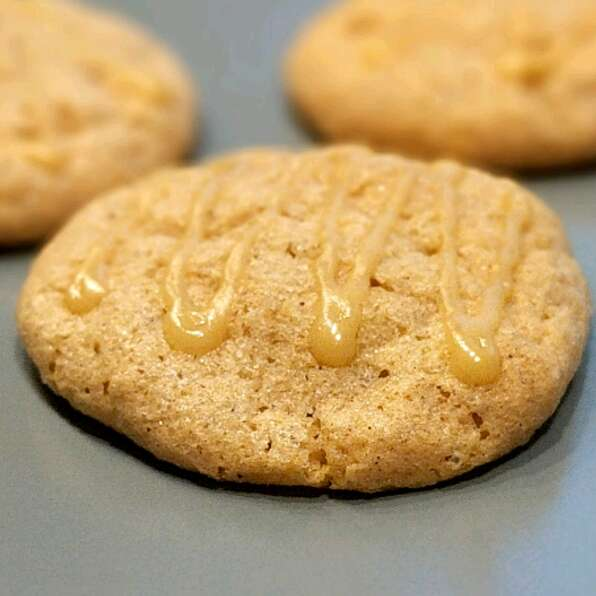

Ultimate Maple Snickerdoodles

#1 Maple Cookie
These have been voted the number one cookie that I bake (and I bake a lot!), and are loved by all who eat them. They are chewy mapley good!
Ingredients
- 2 Cups All-Purpose Flour
- 1 1/2 Teaspoons Baking Powder
- 1/4 Teaspoon Baking Soda
- 1 1/2 Teaspoons Ground Cinnamon
- 1/2 Cup Margarine, Softened
- 1 Cup White Sugar
- 3 Tablespoons Real Maple Syrup
- 1 Egg
- 1/2 Cup White Sugar
- 1/4 Cup Maple Sugar
Steps
- Preheat oven to 350 degrees F (175 degrees C). Stir together the flour, baking powder, baking soda, and cinnamon. Set aside.
- In a large bowl, cream together the margarine and 1 cup of white sugar until light and fluffy. Beat in the egg and maple syrup.
- Gradually blend in the dry ingredients until just mixed. In a small dish, mix together the remaining 1/2 cup white sugar and the maple sugar.
- Roll dough into 1 inch balls, and roll the balls in the sugar mixture. Place cookies 2 inches apart on ungreased cookie sheets.
- Bake 8 to 10 minutes in the preheated oven. Cookies will be crackly on top and look wet in the middle. Remove from cookie sheets to cool on wire racks.